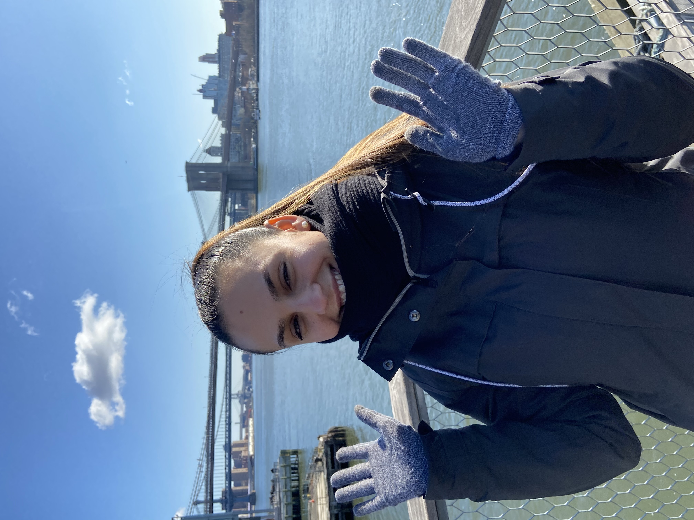
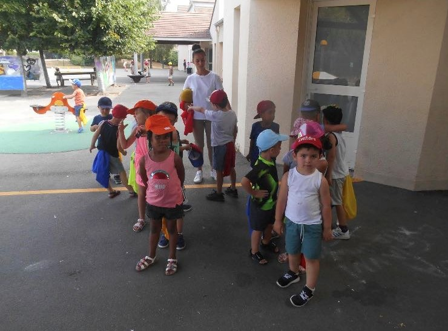
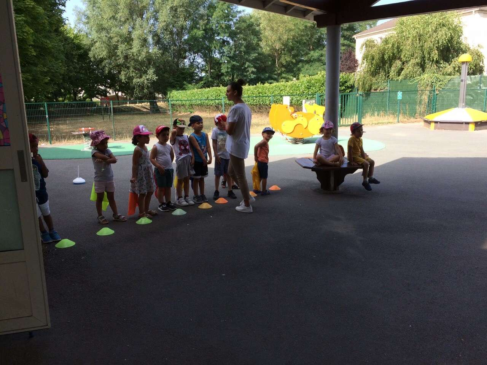
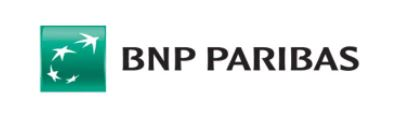
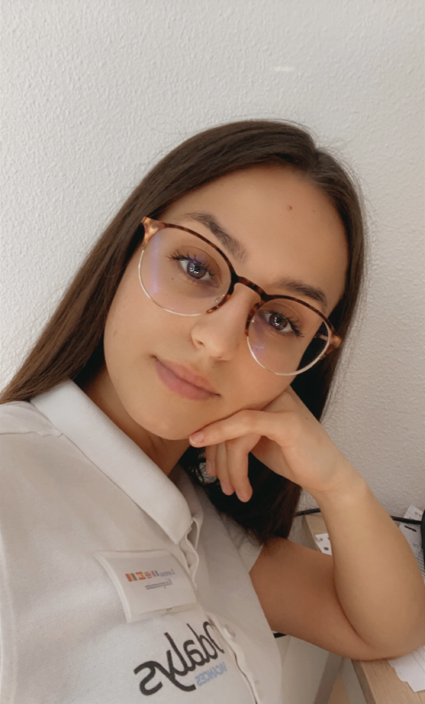
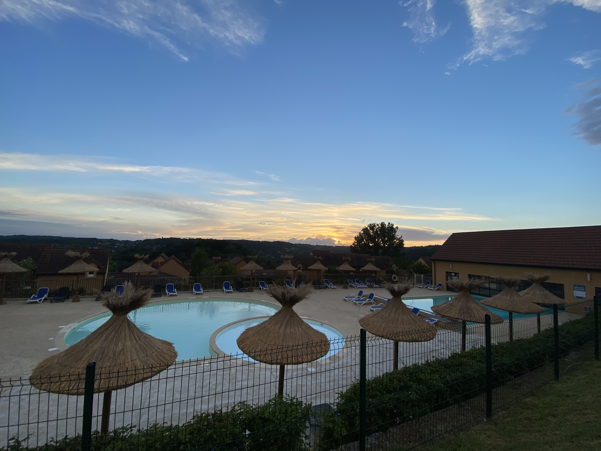

Je m'appelle Lorena CORSEI, j'ai 21 ans et je suis acctuellement en Master 1 spécialité Marketing à Kedge Business School à Bordeaux, je souhaite travailler plus tard dans le domaine du marketing digital. 📚
Grâce à mon portfolio, vous allez pouvoir en savoir plus sur moi-même, mes centres d'intérêts ainsi que mes expériences professionnelles.
⬇️ Ci-dessous, vous pourrez en savoir davantage sur les différents postes que j'ai pu occuper. ⬇️
Lors de mes deux années de DUT Techniques de Commercialisation effectuée en région parisienne, j'ai eu l'opportunité d'effectuer un échange universitaire au Canada où j'ai pu choisir mes propres cours. De ce fait, j'ai choisi des cours en marketing digital qui m'ont fortement plu. Cependant, j'avais un attrait fort pour le secteur touristique, et j'ai décidé d'effectuer par la suite une Licence 3 Management et Ingénierie des Indutries du Tourisme à Toulouse. Je me suis rendue compte que je ne souhaitais pas me limiter au secteur touristique et que les matières pour lesquelles j'avais de l'appétence était le marketing. C'est donc une des raisons pour lesquelles j'ai décidé de faire mon Master 1 en Marketing en école de commerce.
Persévérante : je suis une personne qui n'abandonne jamais face à des obstacles.
Enthousiaste : je suis toujours prête à relever de nouveaux défis.
Ouverte d'esprit : je suis très curieuse sur le monde et les personnes qui nous entoure.

📸 Vous pouvez me suivre sur Instagram 📸
Je suis une personne qui aime de nombreuses choses, mais je vais me contenter de vous citer les principales choses qui m'animent.
Durant ma première année de DUT Technique de Commercialisation, j'ai eu l'opportunité de réaliser un stage de 3 semaines au sein de la maison 123 qui a été prolongé d'une semaine en tant de conseillère de vente. Cela m'a permis de développer mon sens du relationnel et d'être au contact de la clientèle afin de l'accompagner dans la recherche de ses besoins.


Par la suite, en juillet 2019, j'ai travaillé auprès des enfants en tant qu'animatrice de loisirs. Cette expérience a été très enrichissante car travailler avec ce public est totalement différent des autres expériences que j'ai pu avoir. Cela demande de faire preuve de patiente, créativité et réactivité.

En août 2020, j'ai travaillé dans le secteur bancaire à la BNP PARIBAS en tant que chargée de relation client en région parisienne et par la suite en région toulousaine lors des vacances scolaire. J'ai eu l'occasion de découvrir un domaine que je ne connaissais pas et bien que l'expérience fut enrichissante, cela n'est pas un secteur qui m'attire et dans lequel je souhaite évoluer.


Enfin, j'ai effectué un stage de 4 mois en tant que Responsable d'hébergement à Sarlat-la-Canéda en Dordogne dans le cadre de ma licence en tourisme. Cela m'a permis d'appréhender le secteur touristique et avoir des missions plus à responsabilité. En effet, j'ai été en charge du recrutement de saisonniers et de leur déclaration auprès de l'URSSAF ou encore j'ai géré les différents éléments de gestion et de comptabilité de l'établissement.
Grâce à mes diverses expériences, j'ai pu voyager dans différents pays: